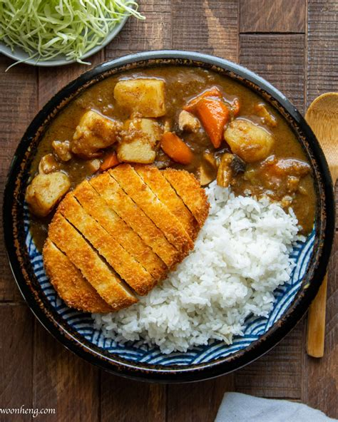

Japanese Curry w/ Katsu
Return to Home

A simple dish, especially the curry. You don't need to serve with Katsu but it's a tasty protein addition! And if you're feeling really creative you can add an egg and maybe some edamame to serve with it.
Ingridents
- Chicken Breast
- Plain White Flour
- Eggs
- Panko Breadcrumbs
- Sushi Rice
- Potatoes
- Carrots
- Onion
- Golden Curry Mix / Kokumuro
- Your choice of deepfry oil.
- Olive Oil
Steps
- Start by preparing the chicken breast, cutting it in half and setting it aside.
- Next you'll need to seperate the yolks from the eggs and put the egg whites into a big enough bowl to dip the chicken in.
- Pour or optionally sift the flour into another medium bowl with panko breadcrumbs in a different similarly sized bowl.
- The process of crumbing the chicken starts by dipping the breast into the flour, then the egg whites, and then the panko bread crumbs. Make sure to stick as much of the crumbs as you can to the chicken breast and set it aside.
- Wash your hands and start cutting up the vegetables into small cubes, leaving the onions diced.
- At this stage, it's best to put the rice on to cook in a rice cooker.
- Put the potatoes in a large pot with Olive oil and stir for 5 minutes.
- Repeat now with the carrots and onions.
- Add a large amount of water, enough to drown the vegetables in and a pack of kokumuro
- Cooking it down is a simple process of stirring once in a while during the rest of this endeavour.
- Next Grab out a large enough pan to fill with 3cm of deep fry oil, then place the crumbed chicken into the pan after it's very hot (171C).
- Continue deep frying as many chicken cutlets as you need while cooking down the curry.
- Once all is done, take the rice off of warming and serve with the curry and chicken and voila!